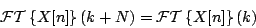
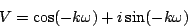

Next: Fourier transform as additive
Up: Fourier analysis of periodic
Previous: Fourier analysis of periodic
Contents
Index
If X[n] is, as above, a signal that repeats every  samples, the Fourier
transform of X[n] also repeats itself every units of frequency, that is,
samples, the Fourier
transform of X[n] also repeats itself every units of frequency, that is,

for all real values of  . This follows immediately from the definition
of the Fourier transform, since the factor
. This follows immediately from the definition
of the Fourier transform, since the factor

is unchanged when we add (or any multiple of ) to .
Miller Puckette
2006-12-30